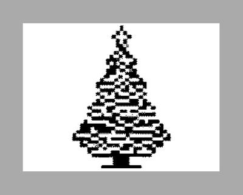

С наступающим, друзья! У меня год получился крайне неплодотворный в онлайне, зато очень насыщенный в оффлайне — например, я теперь кандидат физ.-мат. наук. В следующем году, надеюсь, все перевернется и я выпаду уже из реальной жизни, чтобы доделать все начатое тут.
Ну что же, RANDOMIZE USR 2025!
PS И вот написал я предыдущую строчку, и стало жутко интересно, а что эта программа делает-то? Понятно, что запускает какой-то код в ПЗУ по адресу 2025, но что там? Сходил в эмулятор, проверил. Комп не виснет, не сбрасывается, пытается читать порт #FE. Выглядит как загрузка с кассеты, и действительно, подсовываем TAP-ку, и идут полосы. Но в конце всегда R Tape Loading Error. Что происходит-то?
Попробовал другие адреса, чуть поменьше. Интересно, что до 2022 у нас несколько "лет" стабильно сразу же был R Tape Loading Error, даже без попытки что-то грузить. А вот с 2022 началась какая-то непонятная хрень и длится до сих пор.
Пришлось расчехлить отладчик и заодно читать "Полный дизассемблер ПЗУ". В общем, адрес 2025 у нас находится внутри процедуры VERIFY (это загрузка блока с ленты и сравнение его с тем, что находится в памяти). Но раз мы прыгаем туда как попало в середину процедуры, то и в регистрах у нас мусор. В итоге верификация идет для куска кода, начинающегося по адресу 2D2B (то есть грузим мы в ПЗУ, что не имеет смысла) и длиной 23778 байт. И вот тут мне стало интересно, а можно ли программу, состоящую из одной строки "RANDOMIZE USR 2025" заставить делать что-то если не полезное, то хотя бы симпатичное. Сразу приходит на ум, что раз блок мы грузим огроменный (почти 24 килобайта!), то хоть начало у него и в ПЗУ, конец-то будет в ОЗУ. И по пути мы перезапишем и экран, и переменные бейсика, и этим можно воспользоваться. Поэтому просим нейросеть сгенерить нам черно-белую елку, конвертим в 6912, кладем внутрь блока длиной 23778 точно в то место, которое загрузится в экран, и готово! Результат на картинке, тапка в комменте 🌲 Внутри лоадер из одного нашего randomize + беззаголовочный блок нужной длины.
Поэкспериментировал бы еще, но уже пора садиться за салаты. Так что постскриптум закончился так же неожиданно, как и начался 😀 Удачи вам, увидимся в новом году!



{kind=link}
{kind=link}
{kind=link}
{kind=link}
{kind=link}
{kind=link}